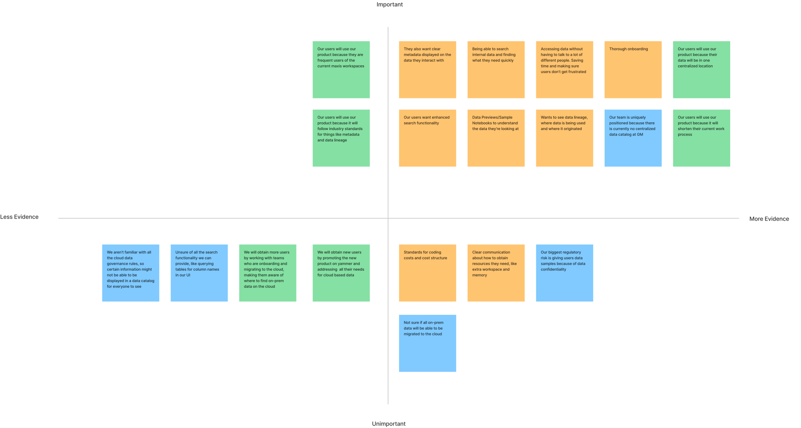

Data Catalog
A new tool to help users locate data whether it's on-prem or in the cloud.
With GMs transition to the cloud, much of the company’s data has begun being moved from on-prem to the cloud. Some data will remain on-prem but a lot of data is required to move to other locations hosted by multiple cloud providers. Our team needed to figure out the challenges associated with this transition and create a design to help users find the data they need. For this project, I worked with two other UX designers. We created the project from ideation to the final high-fidelity prototype. I also conducted user interviews and usability tests.
The problem
1. There is no centralized Internal Data Catalog for GM. With multiple on-prem data catalogs and cloud providers it can be difficult to know where to look for which data. Most of the time users don’t know if the data they need is on-prem or on the cloud. Currently, the only option is for users to look for data by asking around to know where it is.
2. Users need more information about data limitations and available resources. There is a lack of documentation regarding the proper way for requesting access to data, subscriptions, repos, etc. Currently, the most common process is reaching out to different teams to find that information or simply doing the research on their own. This has become a time-consuming process and many users have expressed their concerns.
3. There are no standards for coding and cost structure. Teams across the organization are still uncertain about coding standards. This is a big problem since not following the standards can drive up costs and issue warnings from higher ups. Users have said there is no one setting consistent standards for others to follow, so they have to create them on their own, but there is a lot of room for error and confusion since it’s very open-ended.
Solution
A central hub for data exploration. The data catalog will document available datasets along with their location, descriptions, lineage and usage instructions. Display heuristics and use structure to indicate which data is the best. Clear documentation on how to on-board to cloud providers, how to gain access to data and how to take code to production will also be provided. Provide standards and a community where people can get access to this information. These problems can all be addressed by the central data hub.
User Interviews
The goals of these user interviews was to understand how users interact with Maxis Workspaces (an on-prem GM tool), Databricks, or Azure, along with how they discover data at GM. The interviews were semi-structured to allow users to talk about any relevant products and experiences since our interviewees were from different organizations. We wanted to understand the current experience of users so we can better address their problems. Who are they and what are their goals, needs, pain points and behaviors?
Our interviews consisted of 13 participants and 3 different user types
- 5 Leads
- 3 Data Scientists
- 3 Engineers
- 2 Developers
Affinity Mapping
Following the user interviews, we summarized key takeaways and common themes by using an affinity map. We aggregated these conclusions and observations on a table of [x-axis] likes, dislikes, behaviors and goals separated by the topics[y-axis] of Data Discovery, Azure, Databricks and Maxis Workspaces. This map helped us view the results in a more consumable manner and allowed us to easily identify areas of opportunity, opportunities for us to create UI solutions that would bring users to our product.

Personas
After organizing our thoughts using the Affinity Mapping method, we created three distinct personas that represent the users of our product.
The first persona is a Tech Lead who uses Maxis Workspaces and Databricks to support their teams with development work and data discovery. This user needs to evangelize the use of Databricks to their team and is focused on finding data and getting access as quickly as possible.

The second persona is a Data Scientist who utilizes Maxis Workspaces, Databricks & Azure to find data, build models, automate workflows and deploy Low-Code Apps in Maxis Workspaces. This user focuses on locating the relevant data for their project to complete their tasks, but they find that there is no clear path to finding and getting access to the data. These users need a way to search through all data at GM along with finding a way to productionalize their code. This user is frustrated they cannot find clear standards on how to do things like request CPU or memory.

The third persona is an Analytics Engineer who is helping prepare their team to move to the cloud. They’re getting familiar with finding data in Azure but he doesn’t really know where to look. He needs fast, reliable performance and a way to view data lineage. It’s unclear who to contact for requesting approval for access to data.

Journey Mapping
For each persona we also created a journey map to lay out the user’s path to their goal and identify areas of potential improvement.


Assumption Mapping
After the journey mapping, we made sure to highlight any areas of the product and user experience where we were still making assumptions. There were a number of technical challenges that we heard about from our developers and other stakeholders in various meetings regarding feasibility. Our manager expressed that this was not cause for concern for the design process as they wanted to complete Proofs of Concepts and get the back end ready for our UI.
GM also had a lack of information about working with cloud data and we would need to find a way to collect information about best-practices, such as by collaborating with other teams to get that information. Because of this however, there was no list of requirements for the MVP, so we began thinking about what was most likely to be included for v1 so we can be more realistic about the first iteration of design. The assumption map allowed us to check in with each other and decide the most desirable features that are actually feasible, along with the UX elements to make the product viable.

Checkpoint: Roadmap Planning
Our manager wanted us to share our findings with them to confirm the direction we were headed. We used a roadmap planning template in figma to provide a high level overview of the problem, research results, and the vision and solution for the project. We also used notes from our assumption map here for things like our vision and some of the feasibility problems.
Vision Brainstorm
Problems and Opportunities

Solutions and Projects Brainstorm
Stakeholder Workshop
Before we continued on with the design process, we wanted to confirm the vision, goal and high level features of the new product with our stakeholders. This workshop with the stakeholders would also give us the green light to continue on with the design process.
The workshop was a two day event that required our director to participate. The UX team prepared to ensure we had an organized agenda with clear goals for the workshop. The four main topics were Data Discovery, Data Marketplace, SQLGPT & Existing products, and future products. Before starting on the first day we shared our personas to remind everyone about our users and ensure empathy towards them.
Buy-in with our stakeholders was also increased as they were impressed with our research and designs so far, and so they looked forward to future designs.
After the workshop we spent a lot of time as a UX team processing and analyzing our notes. We used the results of the workshop to create action items which included questions we still needed to research or find answers to. We made sure to organize design goals by themes.
Research Cloud Platforms and Data Engineering
While we worked through a lot of technical cloud information using UX exercises and methods, we also spent time conducting our own research. The cloud data space was new to my teammates and I so it was important to educate ourselves about what kind of platforms and tools our users have been using. This also helped me understand the developer’s conversations in various meetings that we attended. Topics we researched included ServiceNow, Hashicorp - Terraform, Unity Catalog, data quality, and Atlan.
User Flows
Before sketching designs, we start by creating user flows to show the potential user experience and map the user’s current or future path to their goal. It is important to create a current and future user flow to compare the differences and to have a point of reference where we started later in the design process.
We individually create our own user flows and then share and combine them into one unified flow for each scenario. This encourages unique perspectives from everyone and decreases bias between each other’s thought processes. It also ensured we think of every possible step and question about the user’s path to accomplish their goals.
After creating the final user flows, we all added notes around the steps with key information that we will likely return to when sketching. We added red notes around steps where we had questions and purple notes around important metadata elements along with other ideas to keep in mind while sketching the step.
Future User Flows
Inspiration
Another task we do before sketching is gathering screenshots of other products and sharing our ideas with each other.

Crazy 8's
After revisiting all the research and getting familiar with the inspiration gathered, we were each ready to begin sketching our crazy 8’s.

Information architecture & Confirming Metadata
The user flows and crazy 8’s revealed there were still some decisions to be made about information architecture and the metadata for the data items we wanted to host. Since there were a lot of pages and features to organize, this exercise would help us clarify the architecture we needed to facilitate. We were also not receiving a clear list of metadata for the data item page and needed to know the final list of content to include in our designs. We ended up getting the information by attending a few meetings with stakeholders on adjacent teams. These meetings were crucial since we were able to get our product in front of other organizations and obtain their feedback and the metadata. The stakeholders from our organization were also present at these meetings, so they were able to sign off on the requirements.
Low-Fidelity Designs
Once we confirmed the metadata with stakeholders and had a good grasp on information architecture we were ready to design Low-Fidelity wireframes. Using our crazy 8’s we jumped into individual wireframes of the homepage, search/search results, and the data item page. We spent some time working to create options for each page.
Below are some of the wireframes I designed, press the left and right buttons to navigate through the screens. I also added a description at the bottom of each picture.
Homepage
Data Search
Data Item Page
Afterward, we presented our lofi designs to our manager and PM and got the green light to transform them into hi-fidelity designs. The five of us voted on which elements we liked from each option. Since there were three designers and three distinct features, we decided to split up the work and have one person work on each feature. I decided to work on the data item page.
Prototyping Final Designs
As this was a new product, we spent a lot of time experimenting with the UI’s look and feel. We used the inspiration we collected previously for ideas for different color and theme combinations. Eventually we decided on a light-subtle theme due to the nature of the UX and amount of information we needed to present. When users are interacting with this product they will be spending a lot of time reading the information on the data page or search page. This led to us first designing in a light theme. Later, we would work on adding an optional dark theme for users. Our main motivation was to not overwhelm users with too many colors and information. We also went with a blue theme to make the product feel associated with General Motors.
I had previous Experience with Figma from college coursework and independent projects, but this was the first time we used Figma as a team with the company. We were transitioning from Adobe XD to Figma due to better collaboration and sharing of screens with devs. We were able to organize our work and components. We continued using some of our habits XD like organizing versions in documents but now pages. We also used Figma features like Dev Mode for better handoff to our developers.
Below are the final designs I made for the Data Item page, along with my reasoning. After we designed the final prototype, we got the opportunity to conduct usability tests with it. These designs have feedback from the tests applied to them already, but I will discuss the usability testing afterward.


Usability Testing
We wanted to conduct usability tests earlier in the design process but we originally did not have enough time. Deadlines shifted though and we were able to test our high-fidelity prototype with a few users. We conducted four semi-structured usability tests with 4 different tasks to get feedback on each feature.
The main feedback we received was about filters on the data search page and metadata organization on the data item page. I changed the order of the metadata list on the data item page to show the most relevant items first and then changed some of the labels and icons to be more accurate.
Usability Testing Summary
Conclusion
The Data Catalog was an exciting challenge as it was the first project I worked on from idea to development at General Motors.
We managed to get all necessary information and feedback despite the barriers around communication and siloing in the large IT organization. Checking in with both our manager and PM during stand ups and additional syncs helped break down large problems and understand technical limitations.
Since I didn’t have prior knowledge about the cloud space, I improved my technical knowledge and creativity by thinking about a lot of possible solutions to our user’s problems. It was great building something from scratch and getting to hand it off to our devs. The product is currently in development, with v1 soon to launch.
Appendix
Home Page

Data Search Page

- UX Research
- UX Design
- Usability Testing
- Affinity Mapping
- Assumption Mapping
- Journey Mapping
- Stakeholder Workshops